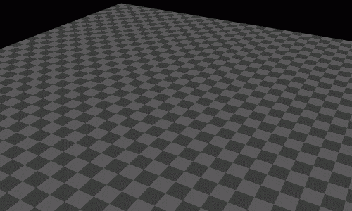

1.80 New Features
Common
Collisions
Added collision settings for particles. You can combine ground or external collisions with bounce, friction, lifetime reduction, and coordinate space settings to control the resulting behavior.

Track, Ribbon
Added settings for repeating UVs at a specified length on tracks and ribbons.
Rotation
Particles can now rotate to align with their direction of movement.
Triggers / Spawning
Expanded spawning with two modes: Continuous and Trigger.
Also supports parent-removed and parent-collision triggers, as well as spawn counts per trigger.
External Models
External models can now be registered as emission sources. During both spawning and rendering, you can specify the external model index and coordinate system (local/world).
Rendering
Expanded rendering settings with directional billboarding. Also supports UV horizontal flip probability, mirror wrap, tile length, and per-particle tiling.
Models
Updated the model converter and supported formats so that gltf / glb / obj / geo / bgeo can be loaded directly.
Materials
Added the following nodes to the material editor.
Smooth Step
Branch
Compare
Logical AND / Logical OR / Logical NOT
IsFrontFaceParticleTime
White Noise / Cellular Noise
RGB to HSV / HSV to RGB
GPU Particles
Added GPU-based particle simulation. This allows much larger particle counts to be handled efficiently. Note: This is currently a preview feature and may not be available in all environments.

Profiler
Added a profiler for measuring and displaying CPU and GPU load. Note: This is currently a preview feature and may not be available in all environments.

Tools
Viewer
Ground collision can now be enabled for the viewer ground surface.
Unity
Updated EffekseerForUnity to the 1.8 series.
Added an import menu for
.efkfiles together with their dependent resources.Added trigger APIs to
EffekseerHandleandEffekseerEmitter.Added layer mask support in URP/HDRP custom render passes.
Added URP RenderGraph support for Unity 6.
The WebGL plugin is selected according to the Unity version:
Unity 2021.2 or later:
2.0.19Unity 2022.2 or later:
3.1.8Unity 2023.2 or later:
3.1.38
Bug Fixes
Common
Fixed a bug where GPU particles were not rendered correctly.
Unity
Fixed a bug where
RenderGraphExecutionErroroccurred in Unity 6.3 with URP / RenderGraph.Fixed a bug where the initial playback from
EffekseerEmitterdid not apply rotation, scale, visibility, and playback speed correctly.Fixed a bug where effects were not rendered on Android when using RenderGraph and Vulkan.